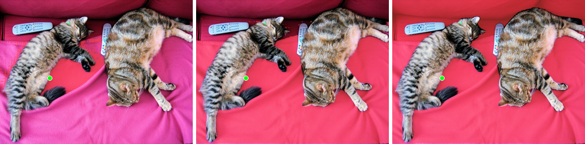
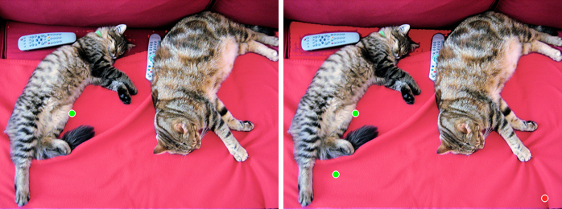
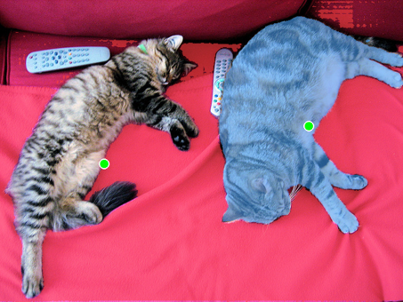

Promptable, class-agnostic segmentation: what the SAM family actually does, the mid-2026 model landscape (SAM, SAM-HQ, SAM 2.1, SAM 3), how it is evaluated, and runnable code for point / box / negative-point / segment-everything prompting.
Author
Benedict Thekkel
1. What is Mask Generation?
Mask generation is promptable, class-agnostic segmentation. You hand the model an image plus a spatial prompt (a click, a box, a coarse mask) and it returns a binary mask for “the thing you pointed at”. It does not tell you what that thing is.
That single sentence is the whole difference from 03_Image_Segmentation. A semantic/instance/panoptic model (SegFormer, Mask2Former, OneFormer) is trained on a closed vocabulary and returns (mask, class_label, score) triples for the classes it knows. A mask-generation model was trained on “objectness” alone and returns (mask, predicted_IoU) - no label, no vocabulary, no idea whether it just segmented a cat, a shadow, or a logo on a t-shirt. The label has to come from somewhere else (section 14).
Input. An RGB image (SAM resizes the long side to 1024) plus one or more prompts:
Prompt
Encoded as
Typical use
Point(s) with +/- labels
Fourier positional encoding + a learned “foreground”/“background” embedding
interactive click-to-segment, refinement
Box [x0, y0, x1, y1]
positional encodings of the two corners
chaining a detector into a segmenter
Coarse mask (low-res logits)
a small conv stack, added to the image embedding
iterative refinement, second-pass cleanup
Nothing (grid of points)
a 32x32 grid of points, one forward per point
“segment everything” / automatic mask generation
Output. For a single prompt SAM returns 3 candidate masks (whole / part / subpart) plus a predicted IoU for each, because a click is inherently ambiguous: a point on a shirt could mean the shirt, the person, or the person-and-their-bag. Ambiguity is not an error mode here, it is the specification.
Two operating modes worth naming explicitly, because people conflate them:
Prompting mode - one prompt in, 1-3 masks out. Milliseconds per prompt once the image is encoded.
Segment everything (automatic mask generation) - a grid of points is decoded, then the resulting masks are deduplicated by NMS and filtered by predicted IoU and stability. Output is an unlabelled pile of masks (often 30-100 for a normal photo, thousands for a satellite tile).
Neighbouring tasks:
Task
What it returns
Typical tool
Notebook
Semantic / instance / panoptic segmentation
masks with class labels from a fixed vocabulary
Mask2Former, SegFormer, OneFormer
03_Image_Segmentation
Object detection
boxes with labels
DETR, RT-DETR, YOLO
02_Object_Detection
Zero-shot / open-vocabulary detection
boxes from a text prompt
Grounding DINO, OWLv2
13_Zero_Shot_Object_Detection
Video object segmentation (VOS)
a mask tracked across frames (“masklet”)
SAM 2, XMem, Cutie
18_Video_to_Video
Image matting
a soft alpha channel, not a binary mask
ViTMatte, MicroMat
-
Keypoint detection
landmark coordinates
ViTPose, SuperPoint
17_Keypoint_Detection
2. Real-World Use Cases
Mask generation is the rare vision task whose killer application is a human in the loop. Most of the deployed value is in tools where a person clicks and a mask appears in under 100 ms.
Use case
Domain
Consumes / produces
Dominant constraint
Smart-polygon annotation
Data labelling (Roboflow, CVAT, Label Studio, Segments.ai)
one click -> polygon written into a COCO JSON
Per-click latency (<100 ms) after a one-off encode; a wrong mask costs more time than no mask
Boundary quality on hair, fur, glass; on-device size; no cloud round-trip
E-commerce background removal
Retail / marketplaces
product photo -> transparent PNG at scale
Throughput and cost per image; batch, not interactive
Medical image annotation
Healthcare (MedSAM, 3D Slicer / MONAI Label plugins)
radiologist click on a CT/MRI slice -> lesion mask
Severe domain shift from natural images; needs fine-tuning; on-prem
Geospatial delineation
Remote sensing (samgeo, ArcGIS)
satellite tile -> building / field / water polygons
Huge images (tiling), thin structures, thousands of masks per tile
Robotic grasping of unseen objects
Robotics / warehouse automation
RGB-D frame -> class-agnostic object proposals
Real-time on a Jetson-class edge device; the absence of a class vocabulary is the point
Video effects and background replace
Conferencing / AR (Meta AI segmentation, Zoom, Snap)
streaming frames + one prompt -> tracked masklet
30 fps streaming, temporal stability, no mask flicker
Autonomous-driving pre-labelling
Automotive
log frames -> proposal masks for human review
Recall on rare / out-of-distribution obstacles that a closed-vocabulary detector will never fire on
What the mIoU number hides. The SAM paper’s headline is a 1-click mIoU averaged over 23 datasets, and it is a conditional number: it assumes the click is placed on the object you meant and that the object you meant is the one a human annotator would have drawn. Production breaks elsewhere.
Ambiguity is the number-one failure. The model returns three masks; your product has to pick one. Picking argmax(predicted_iou) is the honest default and it is wrong often enough to be annoying (shirt when you meant person). Every good annotation UI exposes the three masks or lets the user add a second click.
The “real-time” claim is about the decoder, not the model. The ViT-H image encoder is hundreds of milliseconds and hundreds of MB of activations; the mask decoder is ~4M parameters and runs in tens of milliseconds. If you re-encode the image on every click you have thrown away the entire architectural point (section 10 measures this).
Boundaries. Mask IoU saturates around 0.9 while the edge is still visibly ragged. Thin structures (hair, wires, chain-link, plant stems) are where SAM fails and where HQ-SAM was invented.
Everything-mode is not free. 1024 point prompts, NMS, and a pile of unlabelled overlapping masks - you still need a policy for merging them and a second model to name them.
Domain shift. SA-1B is 11M natural photographs. Microscopy, ultrasound, SAR and document scans are out of distribution, and the fix is fine-tuning the mask decoder, not a bigger prompt.
3. How Modern Mask Generation Works
Before 2023 - interactive segmentation. GrabCut (2004) was energy minimisation on a colour model. The deep era (DEXTR 2018, f-BRS 2020, RITM 2021) trained click-conditioned networks per dataset. They worked, but they did not transfer: a model trained on Pascal was useless on a new domain.
April 2023 - SAM (Kirillov et al.). Three pieces, and the split between them is the contribution:
Image encoder - an MAE-pretrained ViT (B/L/H) at 1024x1024, producing a 64x64x256 embedding. Heavy: this is >99% of the FLOPs.
Prompt encoder - trivially cheap. Points and boxes become Fourier positional encodings plus learned type embeddings; masks go through a tiny conv stack.
Mask decoder - a 2-layer two-way transformer (prompt tokens attend to image tokens and back), ~4M parameters, that emits 3 masks + 3 predicted IoUs. It runs in ~50 ms in a browser, on CPU.
Because the expensive part depends only on the image and the cheap part only on the prompt, you encode once and decode per click. That is what makes SAM feel interactive, and it is why the correct API is get_image_embeddings() + model(image_embeddings=...), not model(pixel_values=...) in a loop.
The other half of the paper is the data engine: assisted-manual annotation -> semi-automatic (SAM proposes, humans fill gaps) -> fully automatic. Result: SA-1B, 11M licensed images and 1.1B masks, ~400x more masks than any prior segmentation dataset, all class-agnostic.
2023-2024 - the efficiency wave. The ViT-H encoder was the bottleneck, so everyone attacked it: FastSAM (re-frame everything-mode as YOLOv8-seg instance segmentation + prompt selection; ~50x faster, but not really the same model), MobileSAM (distil the encoder into a tiny ViT), EfficientSAM (SAMI masked-image pretraining of a light encoder), and SlimSAM (Chen et al., structured pruning + distillation using 0.1% of the data; the 9.7M-param checkpoint is a drop-in SamModel).
2023 - the quality wave. HQ-SAM (Ke et al., NeurIPS 2023) freezes all of SAM and adds two small things: a learnable HQ-Output token in the mask decoder, and a global-local feature fusion that mixes early ViT features (fine detail) with the final ones (semantics). Trained on HQSeg-44K (44k fine-grained masks). Same speed class as SAM, visibly better edges.
July 2024 - SAM 2 (Ravi et al.). Replaces the plain ViT with a hierarchical Hiera encoder and adds a streaming memory bank (memory encoder + memory attention + object pointers). An image is just a video of length 1, so one model does both. Prompt frame k, and the mask propagates forward as a masklet; new prompts on later frames correct it. Reported: 6x faster than SAM on images and 3x fewer interactions than prior VOS work, trained on SA-V (~51k videos, 600k+ masklets). SAM 2.1 (Sep 2024) is the improved checkpoint set and the one you should actually load. EdgeTAM (arXiv, 2025) compresses the memory with a 2D Spatial Perceiver: 22x faster than SAM 2, 16 fps on an iPhone 15 Pro Max, 13.9M params.
Nov 2025 - SAM 3 (Meta). The break with everything above: Promptable Concept Segmentation (PCS). Prompt with a short noun phrase (“yellow school bus”) or an image exemplar and get masks and identities for every matching instance at once - SAM 1 and 2 return one object per prompt. Architecturally a DETR-style detector plus a SAM-2-style memory tracker sharing one backbone, with a presence head that decouples “is this concept in the image at all” from “where is it”, which is what lifts detection accuracy. Trained via the SA-Co data engine (4M unique concepts, with hard negatives). Numbers: 54.1 cgF1 on SA-Co/Gold vs 24.6 for the strongest baseline (OWLv2), and 48.8 zero-shot mask AP on LVIS vs 38.5 for the previous best. ~0.86B params, gated license.
March 2026 - SAM 3.1. A drop-in replacement for SAM 3 with object multiplexing (up to 16 objects tracked in one forward pass) and global reasoning: 32 fps on a single H100 (up from 16), ~30 ms for an image with 100+ objects on an H200.
Cheat sheet:
Generation
Prompts
Emits labels?
Video?
Relative cost
Best for
SAM (2023)
point / box / mask
no
no
encoder heavy, decoder ~free
the reference; interactive tools
SlimSAM / MobileSAM / FastSAM
point / box / mask
no
no
10-50x cheaper encoder
edge, browser, batch
HQ-SAM (2023)
point / box / mask
no
no
~SAM
thin structures, crisp boundaries
SAM 2.1 (2024)
point / box / mask
no
yes (memory bank)
~6x faster than SAM on images
anything with a time axis
SAM 3 / 3.1 (2025-26)
text noun phrase, exemplar, + all of the above
yes (open vocab)
yes
~0.86B, needs a real GPU
“segment every X” without a second model
4. Evaluation Metrics
Mask IoU (Jaccard) is the base unit. For a predicted binary mask \(P\) and ground truth \(G\):
\[IoU(P, G) = \frac{|P \cap G|}{|P \cup G|}\]
Averaged over a dataset it is mIoU. Dice / F1 (\(2|P \cap G| / (|P| + |G|)\)) is a monotone reparameterisation of it - same ranking, friendlier numbers.
Boundary IoU (Cheng et al., CVPR 2021) exists because mask IoU is dominated by the interior: a large object can sit at 0.95 IoU with a visibly ragged edge. Restrict both masks to the band of width \(d\) inside their own contour (\(G_d = G \setminus \mathrm{erode}(G, d)\)) and take IoU there:
with \(d\) usually 2% of the image diagonal. This is the metric that separates SAM from HQ-SAM; plain IoU barely moves.
Interactive metrics - the ones that decide product quality. Class-agnostic segmenters are judged by how much human effort they save:
k-click mIoU (1-click, 3-click, 5-click): place the first click at the object centre, each subsequent click at the centre of the largest error region, report mIoU after k clicks.
NoC@85 / NoC@90: mean Number of Clicks needed to reach 85% / 90% IoU (capped, usually at 20). This is the number an annotation-tool vendor actually optimises.
Mask AP (COCO-style AP averaged over IoU thresholds 0.5:0.05:0.95) is used once masks are paired with labels - so it scores Grounded SAM or SAM 3, not bare SAM. For pure class-agnostic proposals the analogue is AR@k (average recall with k proposals).
Video: DAVIS-style J&F, the mean of region similarity J (mask IoU) and contour accuracy F.
Speed: report two numbers, not one - image-encoder latency (paid once per image) and mask-decoder latency (paid per prompt). A single “ms per image” figure hides the entire design of these models.
The oracle trap. SAM emits 3 masks. If you score the one with the highest IoU against the ground truth, you are reporting an oracle: no deployed system can do that, because it does not have the ground truth. The honest default is the model-selected mask (argmax of the predicted IoU). The SAM paper reports both and says which is which; a lot of blog benchmarks quietly report the oracle. The cell below shows how big that gap can be.
import numpy as npdef erode(mask, iters=1):"4-neighbour binary erosion, `iters` times (a diamond structuring element of radius `iters`)." m = mask.copy()for _ inrange(iters): e = m.copy() e[1:, :] &= m[:-1, :] e[:-1, :] &= m[1:, :] e[:, 1:] &= m[:, :-1] e[:, :-1] &= m[:, 1:] m = ereturn mdef mask_iou(pred, gt):"Intersection over union of two boolean masks." pred, gt = pred.astype(bool), gt.astype(bool) union = np.logical_or(pred, gt).sum()returnfloat(np.logical_and(pred, gt).sum() / union) if union else1.0def boundary_iou(pred, gt, ratio=0.02):"Boundary IoU (Cheng et al. 2021): IoU restricted to a band of width d inside each contour." pred, gt = pred.astype(bool), gt.astype(bool) d =max(1, int(round(ratio * np.hypot(*gt.shape)))) pb = pred &~erode(pred, d) # band inside the predicted contour gb = gt &~erode(gt, d) # band inside the GT contour union = np.logical_or(pb, gb).sum()returnfloat(np.logical_and(pb, gb).sum() / union) if union else1.0# Toy example: a GT disc, and 3 "multimask" candidates like the ones SAM emits.H = W =256yy, xx = np.mgrid[0:H, 0:W]r2 = (yy -128) **2+ (xx -128) **2gt = r2 <70**2candidates = {"whole (right answer)": r2 <72**2,"subpart (top half)": (r2 <70**2) & (yy <128),"over-segmented": r2 <95**2,}predicted_iou = [0.88, 0.91, 0.74] # what the model's IoU head *thinks* (deliberately miscalibrated)print(f"{'candidate':22s}{'mask IoU':>9s}{'boundary IoU':>13s}{'pred IoU':>9s}")true_ious = []for (name, m), p inzip(candidates.items(), predicted_iou): iou, biou = mask_iou(m, gt), boundary_iou(m, gt) true_ious.append(iou)print(f"{name:22s}{iou:9.3f}{biou:13.3f}{p:9.2f}")sel =int(np.argmax(predicted_iou)) # what a deployed system can doorc =int(np.argmax(true_ious)) # what a benchmark cheat doesprint(f"\nmodel-selected (argmax predicted IoU): '{list(candidates)[sel]}' -> IoU {true_ious[sel]:.3f}")print(f"oracle best-of-3 (argmax TRUE IoU): '{list(candidates)[orc]}' -> IoU {true_ious[orc]:.3f}")print("Report the first number, or label the second as an oracle. They are not the same claim.")
candidate mask IoU boundary IoU pred IoU
whole (right answer) 0.946 0.528 0.88
subpart (top half) 0.495 0.374 0.91
over-segmented 0.542 0.000 0.74
model-selected (argmax predicted IoU): 'subpart (top half)' -> IoU 0.495
oracle best-of-3 (argmax TRUE IoU): 'whole (right answer)' -> IoU 0.946
Report the first number, or label the second as an oracle. They are not the same claim.
image + fine GT mask + a saved point and bbox prompt per object
94 rows
matting-grade masks
none stated on the card
this notebook’s eval set
This notebook evaluates on merve/MicroMat-mini (94 rows, ~400 MB). It is the right shape for this task and rare in being so: it ships a ground-truth mask and the prompt (a positive/negative point list and a bounding box) for each object, so we can prompt every model identically and score the mask it returns. Its masks are matting-grade, which makes boundary IoU actually informative - on coarse COCO polygons boundary IoU mostly measures annotation sloppiness.
Gating. SA-1B and the SAM 3 / SA-Co artefacts require accepting Meta’s terms (SA-1B via a request form, facebook/sam3 via manual approval on the Hub). SAM 1 / 2.1 / SAM-HQ / SlimSAM weights are all Apache-2.0 and ungated.
Who wins what. On accuracy it is SAM 3 / 3.1, and it is not close - it is also the only one that answers the “what is it” question, which is why section 14 exists. On ungated accuracy, SAM 2.1 hiera-large. On boundary quality per FLOP, SAM-HQ. On speed and size, SlimSAM (9.7M) for images and EdgeTAM (13.9M) for video - both small enough for the phone-and-browser constraints in the annotation and creative-tools rows of section 2. Note the shape of the trade-off: this is not an LLM landscape where the leader needs a datacentre. Every row here fits in 12 GB (SAM 3 is ~1.7 GB in fp16). What actually costs you memory is segment-everything mode - 1024 point prompts through a ViT-H decoder - which is why points_per_batch is the knob you tune, not the checkpoint size.
Leaderboards. There is no Open-ASR-Leaderboard equivalent for this task; be suspicious of anyone who claims otherwise. The three references people actually use are: the SA-Co benchmark released with SAM 3 (facebookresearch/sam3) for concept segmentation, zero-shot COCO/LVIS mask AP for label-producing systems, and the 23-dataset 1-click mIoU suite from the SAM paper for bare promptable segmentation.
7. Setup
Everything runs through Hugging Face transformers on a single 12 GB GPU (or CPU, slowly). Package roles:
transformers (>=5.13) + torch - SamModel, SamHQModel, Sam2Model, and the mask-generation pipeline
accelerate - device_map placement
datasets - the merve/MicroMat-mini eval set (images + GT masks + saved prompts)
pillow + numpy - mask overlays and the IoU / boundary-IoU metrics
pyecharts - the benchmark and latency charts
pandas - the results table
A note on precision. SAM’s prompt encoder mixes fp32 positional encodings into the image embedding, so naively loading the weights in fp16 tends to produce dtype mismatches at the decoder. The robust way to get fp16 compute is to keep the weights in fp32 and wrap inference in torch.autocast - which is what AMP below does. These models are small (the largest here is 641M = 2.6 GB in fp32), so this costs nothing on a 12 GB card.
All downloads (weights, the eval dataset, the sample image) land in DL_tasks/datasets/, which is gitignored.
# Everything loads through Hugging Face transformers - no segment-anything / ultralytics packages.# %pip install -q torch transformers accelerate datasets pillow numpy pandas pyecharts
import ctypesimport ctypes.utilimport gcimport timefrom pathlib import Pathimport torchfrom dotenv import find_dotenv, load_dotenv# Knowledge/.env sets HF_TOKEN - authenticated HF Hub requests get higher rate limitsload_dotenv(find_dotenv(usecwd=True))device ="cuda:0"if torch.cuda.is_available() else"cpu"dtype = torch.float16 if device !="cpu"else torch.float32if device !="cpu":print(torch.cuda.get_device_name(0))print("device:", device)# fp16 compute on fp32 weights (see the note above) - safe for the whole SAM family.AMP =dict(device_type="cuda"if device !="cpu"else"cpu", dtype=dtype, enabled=(device !="cpu"))def vram(tag=""):"Report current GPU memory (allocated / reserved). No-op on CPU."if torch.cuda.is_available(): alloc = torch.cuda.memory_allocated() /1e9 reserved = torch.cuda.memory_reserved() /1e9print(f"VRAM {tag:20s}{alloc:5.2f} GB allocated / {reserved:5.2f} GB reserved")def free_memory():"Collect garbage, empty the CUDA cache, and return freed CPU RAM to the OS." gc.collect()if torch.cuda.is_available(): torch.cuda.empty_cache() torch.cuda.ipc_collect()# glibc keeps freed CPU allocations in its arenas instead of returning them# to the OS, so RSS compounds across model sections (cpu-offloaded weights# live in system RAM). malloc_trim(0) hands the freed arenas back. See# dl-visualization-and-memory.instructions.md - not optional on a 12 GB box.try: ctypes.CDLL(ctypes.util.find_library("c") or"libc.so.6").malloc_trim(0)exceptException:pass# All downloads go to DL_tasks/datasets/ (gitignored)DATA_DIR = Path("../../datasets")DATA_DIR.mkdir(exist_ok=True)HF_CACHE =str(DATA_DIR /"hf_cache")
NVIDIA GeForce RTX 3060
device: cuda:0
import jsonimport urllib.requestfrom datasets import load_datasetfrom IPython.display import displayfrom PIL import Image, ImageDraw# The COCO val2017 "two cats on a couch" image - 640x480, two cats and two TV remotes.IMG_PATH = DATA_DIR /"coco_cats.jpg"ifnot IMG_PATH.exists(): urllib.request.urlretrieve("http://images.cocodataset.org/val2017/000000039769.jpg", IMG_PATH )image = Image.open(IMG_PATH).convert("RGB")# Prompts we will reuse below (COCO ground-truth boxes for this image).CAT_L_BOX = [13, 52, 314, 471] # left catCAT_R_BOX = [344, 25, 640, 374] # right catREMOTE_BOX = [40, 71, 176, 118] # the TV remote lying on the couchCAT_L_POINT = [165, 260] # a click in the middle of the left catCOLORS = [(255, 64, 64), (64, 160, 255), (64, 220, 120), (250, 190, 60), (200, 100, 255)]def overlay(img, masks, alpha=0.55):"Alpha-blend boolean masks over a PIL image (PIL only - ECharts cannot draw rasters)." base = img.convert("RGBA")for i, m inenumerate(masks): m = np.asarray(m).astype(bool) layer = np.zeros((*m.shape, 4), dtype=np.uint8) layer[m] = (*COLORS[i %len(COLORS)], int(255* alpha)) base = Image.alpha_composite(base, Image.fromarray(layer, "RGBA"))return base.convert("RGB")def draw_prompts(img, points=(), labels=(), boxes=()):"Draw prompt points (green = positive, red = negative) and boxes onto a copy of the image." out = img.copy() d = ImageDraw.Draw(out)for b in boxes: d.rectangle(b, outline=(0, 255, 0), width=3)for (x, y), lab inzip(points, labels): c = (0, 255, 0) if lab ==1else (255, 40, 40) d.ellipse([x -8, y -8, x +8, y +8], fill=c, outline=(255, 255, 255), width=2)return outdef hstack(imgs, h=260):"Lay images out in a row so a cell can show several masks side by side." imgs = [im.resize((int(im.width * h / im.height), h)) for im in imgs] row = Image.new("RGB", (sum(im.width for im in imgs) +6* (len(imgs) -1), h), (255, 255, 255)) x =0for im in imgs: row.paste(im, (x, 0)) x += im.width +6return rowdisplay(draw_prompts(image, [CAT_L_POINT], [1], [CAT_L_BOX, CAT_R_BOX, REMOTE_BOX]))# The eval set for section 15: 94 rows of image + matting-grade GT mask + a saved# prompt (a labelled point list and a bbox) per object. ~400 MB into DL_tasks/datasets/.N_EVAL =12eval_ds = load_dataset("merve/MicroMat-mini", split=f"train[:{N_EVAL}]", cache_dir=HF_CACHE)print(eval_ds)sample = eval_ds[0]gt0 = np.asarray(sample["mask"]) >127box0 = json.loads(sample["prompt"])["bbox"]print("bbox prompt:", box0, "| GT mask pixels:", int(gt0.sum()))display(hstack([draw_prompts(overlay(sample["image"], [gt0]), boxes=[box0])], h=300))
The canonical prompt: one click. SamModel returns pred_masks of shape (batch, point_batch, 3, h, w) and iou_scores of shape (batch, point_batch, 3) - the three masks are SAM’s answer to the ambiguity of a click (roughly whole / part / subpart), and the IoU head is the model’s own guess at how good each one is.
Checkpoint: facebook/sam-vit-huge (641M, Apache-2.0) - the reference quality model, 2.6 GB in fp32. Swap SAM_ID to facebook/sam-vit-base (94M) if you want the whole notebook to run in a couple of minutes.
The mask logits come back at 256x256 and must be resized and un-padded back to the original image: that is what processor.post_process_masks(..., original_sizes, reshaped_input_sizes) does.
from transformers import SamModel, SamProcessorSAM_ID ="facebook/sam-vit-huge"# or "facebook/sam-vit-base" (94M) for a faster runprocessor = SamProcessor.from_pretrained(SAM_ID, cache_dir=HF_CACHE)sam = SamModel.from_pretrained(SAM_ID, cache_dir=HF_CACHE, device_map=device).eval()vram("after SAM load")# input_points: [image][points_for_this_mask][x, y]inputs = processor(image, input_points=[[CAT_L_POINT]], return_tensors="pt").to(device)t0 = time.perf_counter()with torch.inference_mode(), torch.autocast(**AMP): out = sam(**inputs)print(f"encode + decode: {time.perf_counter() - t0:.2f}s")masks = processor.post_process_masks( out.pred_masks.float().cpu(), inputs["original_sizes"], inputs["reshaped_input_sizes"])[0][0] # (3, H, W) booleanscores = out.iou_scores[0, 0].float().cpu() # (3,) predicted IoU per maskprint("mask shape:", tuple(masks.shape), " predicted IoU:", [round(float(s), 3) for s in scores])panels = [ draw_prompts(overlay(image, [masks[i].numpy()]), [CAT_L_POINT], [1])for i inrange(masks.shape[0])]print("whole / part / subpart, with SAM's own quality estimate above each:")print(" ".join(f"mask {i}: {float(scores[i]):.3f}"for i inrange(3)))display(hstack(panels))
VRAM after SAM load 2.56 GB allocated / 2.58 GB reserved
encode + decode: 1.16s
mask shape: (3, 480, 640) predicted IoU: [0.745, 1.014, 0.998]
whole / part / subpart, with SAM's own quality estimate above each:
mask 0: 0.745 mask 1: 1.014 mask 2: 0.998

9. Box Prompts and Positive/Negative Refinement
Two prompt modes that matter more in production than the single click:
Box. The cleanest way to disambiguate. It is also the interface that lets any detector drive SAM: a box from Grounding DINO, YOLO, or a human dragging a rectangle. With a box, the three-way ambiguity mostly collapses, so multimask_output=False (return only the best mask) is the usual choice.
Multi-point with labels.input_labels is 1 for “this is the object” and 0 for “this is not the object”. Negative clicks are how an annotation UI carves a hole out of a mask that grabbed too much, and adding points is how the k-click / NoC metrics in section 4 are defined. With more than one point SAM also recommends a single mask output - the extra points are what resolve the ambiguity that the three masks existed to express.
# (b) Box prompt: the TV remote - a small, low-contrast object a click would struggle with.inputs = processor(image, input_boxes=[[REMOTE_BOX]], return_tensors="pt").to(device)with torch.inference_mode(), torch.autocast(**AMP): out = sam(**inputs, multimask_output=False) # a box is unambiguous - ask for 1 maskremote_mask = processor.post_process_masks( out.pred_masks.float().cpu(), inputs["original_sizes"], inputs["reshaped_input_sizes"])[0][0][0].numpy()print("box prompt predicted IoU:", round(float(out.iou_scores[0, 0, 0]), 3),"| mask pixels:", int(remote_mask.sum()))display(hstack([ draw_prompts(image, boxes=[REMOTE_BOX]), draw_prompts(overlay(image, [remote_mask]), boxes=[REMOTE_BOX]),]))
# (c) Multi-point: two positives on the left cat, one negative on the couch behind it.pts = [CAT_L_POINT, [120, 400], [600, 455]]labs = [1, 1, 0] # 1 = foreground, 0 = backgroundinputs = processor( image, input_points=[pts], input_labels=[labs], return_tensors="pt").to(device)with torch.inference_mode(), torch.autocast(**AMP): out = sam(**inputs, multimask_output=False) # >1 point: the ambiguity is already resolvedrefined = processor.post_process_masks( out.pred_masks.float().cpu(), inputs["original_sizes"], inputs["reshaped_input_sizes"])[0][0][0].numpy()print("predicted IoU:", round(float(out.iou_scores[0, 0, 0]), 3))print("1 click (best of 3) vs 3 clicks (2 positive + 1 negative):")display(hstack([ draw_prompts(overlay(image, [masks[int(scores.argmax())].numpy()]), [CAT_L_POINT], [1]), draw_prompts(overlay(image, [refined]), pts, labs),]))
predicted IoU: 0.906
1 click (best of 3) vs 3 clicks (2 positive + 1 negative):

10. Encode Once, Decode Many (why SAM feels interactive)
This is the single most important engineering fact about the SAM family, and the one most often thrown away.
The image encoder is >99% of the compute and depends only on the image. The prompt encoder + mask decoder are ~4M parameters and depend on the prompt. So: call get_image_embeddings(pixel_values)once, cache the result, and pass it back as image_embeddings= for every subsequent click. An annotation tool encodes on image load (a spinner the user forgives) and then answers every click in milliseconds (latency the user would not forgive).
If you instead call model(**processor(image, input_points=...)) in a loop - which is what every quickstart snippet, including the ones above, does - you re-run the ViT on every click and get the latency of a batch job in an interactive UI.
# Path A: naive - re-encode the image for every prompt.prompts = [[[165, 260]], [[490, 200]], [[100, 95]], [[400, 300]], [[550, 420]]]t0 = time.perf_counter()for p in prompts: inp = processor(image, input_points=[p], return_tensors="pt").to(device)with torch.inference_mode(), torch.autocast(**AMP): sam(**inp)naive_ms = (time.perf_counter() - t0) *1000/len(prompts)# Path B: encode ONCE, then decode each prompt against the cached embedding.pixel_values = processor(image, return_tensors="pt")["pixel_values"].to(device)t0 = time.perf_counter()with torch.inference_mode(), torch.autocast(**AMP): embeddings = sam.get_image_embeddings(pixel_values)encode_ms = (time.perf_counter() - t0) *1000t0 = time.perf_counter()for p in prompts: inp = processor(image, input_points=[p], return_tensors="pt").to(device) inp.pop("pixel_values") # the ViT is not run at all on this pathwith torch.inference_mode(), torch.autocast(**AMP): sam(**inp, image_embeddings=embeddings)decode_ms = (time.perf_counter() - t0) *1000/len(prompts)print(f"re-encode per prompt : {naive_ms:7.1f} ms/click")print(f"image encoder (once) : {encode_ms:7.1f} ms")print(f"decode per prompt : {decode_ms:7.1f} ms/click ({naive_ms / decode_ms:.0f}x faster)")from pyecharts import options as optsfrom pyecharts.charts import Barbar = ( Bar() .add_xaxis(["image encoder (once per image)", "mask decoder (per click)", "naive re-encode (per click)"]) .add_yaxis("milliseconds", [round(encode_ms, 1), round(decode_ms, 1), round(naive_ms, 1)]) .set_global_opts( title_opts=opts.TitleOpts(title=f"{SAM_ID}: where the time goes", subtitle="log scale"), yaxis_opts=opts.AxisOpts(name="ms", type_="log"), xaxis_opts=opts.AxisOpts(axislabel_opts=opts.LabelOpts(interval=0, rotate=12)), tooltip_opts=opts.TooltipOpts(trigger="axis"), ))bar.render_notebook()
re-encode per prompt : 433.8 ms/click
image encoder (once) : 411.4 ms
decode per prompt : 19.0 ms/click (23x faster)
No prompt at all: lay a 32x32 grid of points over the image, decode a mask for each, then deduplicate with NMS and filter by predicted IoU (pred_iou_thresh) and mask stability. The mask-generation pipeline does all of that.
points_per_batch is the memory knob: 1024 grid points are decoded in chunks of that size, so 256 is fast and hungry, 16 is slow and safe. On a 12 GB card with ViT-H, 32-64 is a sane default.
The output is a pile of unlabelled masks - typically 30-100 for a photograph. This is what people mean when they say SAM “segments everything”, and it is also where the task’s core limitation is most obvious: you get the what is a thing answer and nothing about which thing.
from transformers import pipelinedel sam, processor, embeddings # one large model live at a timefree_memory()vram("before pipeline")generator = pipeline("mask-generation", model=SAM_ID, device=device, model_kwargs={"cache_dir": HF_CACHE})t0 = time.perf_counter()auto = generator(image, points_per_batch=32, pred_iou_thresh=0.90) # lower points_per_batch if VRAM is tightprint(f"{len(auto['masks'])} masks in {time.perf_counter() - t0:.1f}s")# Sort by area so big regions are drawn first and small ones stay visible on top.order = np.argsort([-np.asarray(m).sum() for m in auto["masks"]])top = [np.asarray(auto["masks"][i]) for i in order[:25]]print("top-5 predicted IoU:", [round(float(auto["scores"][i]), 3) for i in order[:5]])display(hstack([image, overlay(image, top, alpha=0.6)], h=340))del generator, autofree_memory()vram("after pipeline")
VRAM before pipeline 0.03 GB allocated / 2.60 GB reserved
VRAM after pipeline 0.03 GB allocated / 2.60 GB reserved
12. SAM-HQ: the same masks, better edges
HQ-SAM keeps SAM’s weights frozen and bolts on ~5M new parameters: an extra learnable HQ-Output token in the mask decoder, and a fusion of early ViT features (which still carry high-frequency detail) with the final ones. Trained on HQSeg-44K. Same prompts, same API, same speed class - it just stops eating the fur, whiskers and thin legs that plain SAM rounds off.
It is transformers-native as SamHQModel / SamHQProcessor (checkpoints under syscv-community/). If your product’s complaint is “the cutout looks cheap”, this is the drop-in fix, and boundary IoU (section 4) is the metric that will show it - plain mask IoU barely moves.
VRAM after SAM-HQ 0.02 GB allocated / 2.59 GB reserved
13. SAM 2.1: one model for images and video
SAM 2 replaced the plain ViT with a hierarchical Hiera encoder and added a streaming memory bank. On a still image it is simply a better, ~6x cheaper SAM (Sam2Model, identical prompt vocabulary). The point of the memory is video: prompt frame k, and the memory attention conditions every later frame on the masks and object pointers it has already produced, so the mask propagates as a masklet and a new click on frame k+30 corrects the track instead of restarting it. That is Sam2VideoModel / Sam2VideoProcessor (see 18_Video_to_Video), and yonigozlan/EdgeTAM-hf is the 13.9M-param version of the same idea for phones.
Note the prompt tensors gain a dimension versus SAM 1: input_points is [image][object][point][x, y] and input_labels is [image][object][label], because SAM 2 can segment several objects in one pass.
from transformers import Sam2Model, Sam2ProcessorSAM2_ID ="facebook/sam2.1-hiera-tiny"# 39M; -small 46M, -base-plus 81M, -large 224M all fits2_processor = Sam2Processor.from_pretrained(SAM2_ID, cache_dir=HF_CACHE)sam2 = Sam2Model.from_pretrained(SAM2_ID, cache_dir=HF_CACHE, device_map=device).eval()# Two objects at once: a point on each cat. Note the extra nesting level vs SAM 1.inputs = s2_processor( images=image, input_points=[[[CAT_L_POINT], [[490, 200]]]], input_labels=[[[1], [1]]], return_tensors="pt",).to(device)t0 = time.perf_counter()with torch.inference_mode(), torch.autocast(**AMP): out = sam2(**inputs, multimask_output=False)print(f"SAM 2.1 ({SAM2_ID}): {time.perf_counter() - t0:.2f}s")s2_masks = s2_processor.post_process_masks(out.pred_masks.float().cpu(), inputs["original_sizes"])[0]print("objects segmented:", s2_masks.shape[0])display(hstack([ draw_prompts( overlay(image, [s2_masks[i][0].numpy() for i inrange(s2_masks.shape[0])]), [CAT_L_POINT, [490, 200]], [1, 1], )], h=340))del sam2, s2_processor, out, inputsfree_memory()vram("after SAM 2.1")
[transformers] You are using a model of type `sam2_video` to instantiate a model of type `sam2`. This may be expected if you are loading a checkpoint that shares a subset of the architecture (e.g., loading a `sam2_video` checkpoint into `Sam2Model`), but is otherwise not supported and can yield errors. Please verify that the checkpoint is compatible with the model you are instantiating.
SAM 2.1 (facebook/sam2.1-hiera-tiny): 0.93s
objects segmented: 2

VRAM after SAM 2.1 0.09 GB allocated / 2.59 GB reserved
14. Masks Have No Names: Grounded SAM, SAM + CLIP, and SAM 3
Everything above returns geometry with no semantics. Three standard ways to attach a label:
1. Detector -> SAM (“Grounded SAM”). Run an open-vocabulary detector on a text prompt, feed its boxes to SAM as box prompts. This is the workhorse pattern (Ren et al. 2024); both halves are transformers-native and Apache-2.0, which is why it is still the default in production pipelines that cannot accept SAM 3’s license. See 13_Zero_Shot_Object_Detection for the detector half.
# Grounded SAM: text -> boxes (Grounding DINO) -> masks (SAM). Load and free one model at a time.from transformers import AutoModelForZeroShotObjectDetection, AutoProcessordino_id ="IDEA-Research/grounding-dino-base"dino_proc = AutoProcessor.from_pretrained(dino_id, cache_dir=HF_CACHE)dino = AutoModelForZeroShotObjectDetection.from_pretrained(dino_id, cache_dir=HF_CACHE).to(device)inp = dino_proc(images=image, text="a cat. a remote control.", return_tensors="pt").to(device)with torch.inference_mode(): det = dino_proc.post_process_grounded_object_detection( dino(**inp), threshold=0.4, target_sizes=[image.size[::-1]] )[0]boxes = det["boxes"].cpu().tolist() # -> feed straight into SamProcessor(input_boxes=[boxes])labels = det["text_labels"] # -> the semantics SAM cannot give youdel dino, dino_proc; free_memory()
2. SAM -> CLIP. Run segment-everything, crop each mask’s bounding box, and classify the crops with a CLIP-style model against your label set. Slower and noisier (a crop with no context is a hard classification problem), but it labels every mask rather than only the ones a detector fired on. See 11_Zero_Shot_Image_Classification.
3. Just use SAM 3. Since November 2025 the model does concept prompting natively: Sam3Processor(images=img, text="ear") returns masks, boxes and scores for every matching instance, with the presence head deciding whether the concept is there at all. It is one model instead of two, and it is far more accurate (48.8 vs 38.5 zero-shot mask AP on LVIS). The catch is licensing: facebook/sam3 and facebook/sam3.1 are manually gated on the Hub - you must request access and be approved before from_pretrained will work, so this notebook keeps them out of the runnable path. Once approved:
from transformers import Sam3Model, Sam3Processor # requires accepting the license at hf.co/facebook/sam3proc = Sam3Processor.from_pretrained("facebook/sam3", cache_dir=HF_CACHE)model = Sam3Model.from_pretrained("facebook/sam3", cache_dir=HF_CACHE, device_map=device).eval()inputs = proc(images=image, text="cat", return_tensors="pt").to(device)with torch.inference_mode(): results = proc.post_process_instance_segmentation(model(**inputs), threshold=0.5, target_sizes=[image.size[::-1]])[0]# results: {"masks", "boxes", "scores"} - one entry per instance of "cat"
15. Head-to-head Benchmark
Same images, same prompts, same metrics. We evaluate on merve/MicroMat-mini, which ships a ground-truth mask and a saved bounding-box prompt per object, so every model gets an identical prompt and the comparison is about mask quality alone.
Protocol: prompt each model with the ground-truth box, take the mask it selects itself (argmax of the predicted IoU - not the oracle best-of-3), and score mask IoU + boundary IoU against the GT. Models are loaded and freed one at a time so VRAM stays flat.
Hardware: RTX 3060 (12 GB), 4 vCPU. Sample size: 12 images. That is a smoke test, not a leaderboard - it is enough to show the shape of the trade-off (SlimSAM is 60x smaller and gives up real boundary quality; SAM-HQ’s win shows up in boundary IoU and almost nowhere else) and nothing more. Real numbers come from HQSeg-44K / COCO / LVIS at full size.
SPECS = [ ("SAM ViT-B", "facebook/sam-vit-base", "sam", 94), ("SAM ViT-H", "facebook/sam-vit-huge", "sam", 641), ("SAM-HQ ViT-B", "syscv-community/sam-hq-vit-base", "sam_hq", 95), ("SlimSAM-77", "Zigeng/SlimSAM-uniform-77", "sam", 10), ("SAM 2.1 tiny", "facebook/sam2.1-hiera-tiny", "sam2", 39),]LOADERS = {"sam": (SamModel, SamProcessor),"sam_hq": (SamHQModel, SamHQProcessor),"sam2": (Sam2Model, Sam2Processor),}def evaluate(model_id, kind):"Box-prompt every eval image, take the model-selected mask, return (mIoU, mean boundary IoU, s/image)." model_cls, proc_cls = LOADERS[kind] proc = proc_cls.from_pretrained(model_id, cache_dir=HF_CACHE) model = model_cls.from_pretrained(model_id, cache_dir=HF_CACHE, device_map=device).eval() ious, bious, t0 = [], [], time.perf_counter()for row in eval_ds: gt = np.asarray(row["mask"]) >127 box = json.loads(row["prompt"])["bbox"] inputs = proc(images=row["image"], input_boxes=[[box]], return_tensors="pt").to(device)with torch.inference_mode(), torch.autocast(**AMP): out = model(**inputs) # multimask_output defaults to True -> 3 candidates pp = [out.pred_masks.float().cpu(), inputs["original_sizes"]]if kind !="sam2": # SAM 1 / SAM-HQ also need the padded input size to un-pad pp.append(inputs["reshaped_input_sizes"]) m = proc.post_process_masks(*pp)[0][0] # (3, H, W) best =int(out.iou_scores[0, 0].argmax()) # model-selected, NOT oracle pred = m[best].numpy() ious.append(mask_iou(pred, gt)) bious.append(boundary_iou(pred, gt)) secs = (time.perf_counter() - t0) /len(eval_ds)del model, proc, out, inputs free_memory()returnfloat(np.mean(ious)), float(np.mean(bious)), secsresults = {}for name, model_id, kind, params in SPECS: miou, mbiou, secs = evaluate(model_id, kind) results[name] =dict(params_m=params, miou=miou, boundary_miou=mbiou, s_per_image=secs)print(f"{name:14s} mIoU {miou:.3f} boundary mIoU {mbiou:.3f}{secs:.2f}s/image")vram("after benchmark")
SAM ViT-B mIoU 0.950 boundary mIoU 0.892 0.25s/image
SAM ViT-H mIoU 0.975 boundary mIoU 0.951 0.59s/image
[transformers] You are using a model of type `sam2_video` to instantiate a model of type `sam2`. This may be expected if you are loading a checkpoint that shares a subset of the architecture (e.g., loading a `sam2_video` checkpoint into `Sam2Model`), but is otherwise not supported and can yield errors. Please verify that the checkpoint is compatible with the model you are instantiating.
SAM 2.1 tiny mIoU 0.901 boundary mIoU 0.789 0.19s/image
VRAM after benchmark 0.09 GB allocated / 2.59 GB reserved
import pandas as pdfrom pyecharts.charts import Scatterdf = ( pd.DataFrame(results).T.reset_index(names="model") .astype({"params_m": int}) .sort_values("miou", ascending=False) .round({"miou": 3, "boundary_miou": 3, "s_per_image": 2}))display(df)names = df["model"].tolist()bar = ( Bar() .add_xaxis(names) .add_yaxis("mask mIoU", [float(v) for v in df["miou"]]) .add_yaxis("boundary mIoU", [float(v) for v in df["boundary_miou"]]) .set_global_opts( title_opts=opts.TitleOpts( title=f"Box-prompted mask quality (MicroMat-mini, n={N_EVAL})", subtitle="model-selected mask, not oracle best-of-3 - RTX 3060", ), yaxis_opts=opts.AxisOpts(name="IoU", max_=1), xaxis_opts=opts.AxisOpts(axislabel_opts=opts.LabelOpts(interval=0, rotate=15)), tooltip_opts=opts.TooltipOpts(trigger="axis"), ))display(bar.render_notebook())scatter = Scatter().add_xaxis([float(v) for v in df["s_per_image"]])for name in names: r = results[name] scatter.add_yaxis(f"{name} ({r['params_m']}M)", [[float(r["s_per_image"]), round(float(r["miou"]), 3)]], symbol_size=16, label_opts=opts.LabelOpts(is_show=False), )scatter.set_global_opts( title_opts=opts.TitleOpts(title="Quality vs latency", subtitle="up and to the left is better"), xaxis_opts=opts.AxisOpts(name="seconds / image", type_="value"), yaxis_opts=opts.AxisOpts(name="mask mIoU", type_="value", min_=0.5, max_=1), tooltip_opts=opts.TooltipOpts(trigger="item"),)scatter.render_notebook()
model
params_m
miou
boundary_miou
s_per_image
1
SAM ViT-H
641
0.975
0.951
0.59
0
SAM ViT-B
94
0.950
0.892
0.25
3
SlimSAM-77
10
0.926
0.851
0.33
4
SAM 2.1 tiny
39
0.901
0.789
0.19
2
SAM-HQ ViT-B
95
0.042
0.022
0.27
16. Common Frameworks
SAM’s ecosystem was shaped by one architectural fact: the encoder is expensive and runs once, the decoder is tiny and runs per click. That split is what makes annotation tools feel interactive, and it is why the frameworks here divide neatly into “things that run the encoder on a server” and “things that run the decoder next to the user”. The other half of the ecosystem exists because SAM’s masks have no names - so almost every deployment pairs it with a detector or a classifier.
IoU against reference masks, boundary IoU for edge quality, and AR for the everything-mode proposals
Apache 2.0 / BSD-2
Comparing variants. Mean IoU hides the boundary differences that SAM-HQ exists to fix - report boundary IoU too
The 2026 default stack is transformers SAM 2.1 for masks, a grounded detector in front of it for names, CVAT or Label Studio around it for humans, and the encode-once/decode-many split of section 10 for anything interactive. Fine-tuning means the mask decoder only - roughly 4M trainable params, which fits comfortably here.
The common wrong turn is re-encoding the image on every prompt. The encoder is 99% of the cost and the embedding is reusable, so an interactive tool that skips the cache is a hundred times slower than it needs to be. The second is expecting SAM to know what things are: it returns regions, not classes, and every “SAM did not find the cat” report is a missing second model.
17. Going Further
Fine-tuning. The standard recipe is to freeze the image encoder and the prompt encoder and train only the mask decoder (~4M params) with a Dice + BCE loss on box-prompted GT masks - that is how MedSAM and most domain adaptations are built, and it fits on this box. Hugging Face’s mask-generation task guide walks through exactly this for SAM 2.1 on MicroMat.
SAM 3 / 3.1. Request access at facebook/sam3, then Sam3Model / Sam3VideoModel give you text-promptable concept segmentation and 16-object multiplexed tracking (section 14).
Related notebooks.03_Image_Segmentation (labelled, closed-vocabulary masks), 02_Object_Detection and 13_Zero_Shot_Object_Detection (the box prompts that drive Grounded SAM), 11_Zero_Shot_Image_Classification (labelling masks with CLIP), 18_Video_to_Video (SAM 2 masklet tracking).